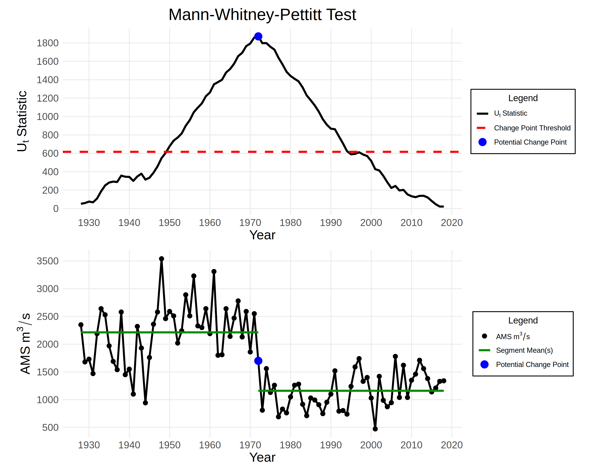

Change Point Detection
The EDA module of the FFA Framework includes two statistical tests for detecting change points in the annual maximum series (AMS): the Mann-Kendall-Sneyers (MKS) test and the Pettitt test. These help identify changes in trends and abrupt changes in the AMS.
Mann-Kendall-Sneyers Test
The Mann-Kendall-Sneyers (MKS) test detects the beginning of a trend in a time series:
- Null hypothesis: There are no change points.
- Alternative hypothesis: There are one or more change points.
Define \(\mathbb{I}(y_{i} > y_{j})\) to be \(1\) if \(y_{i} > y_{j}\) and \(0\) otherwise.
Given a time series \(y_{1}, \dots, y_{n}\), we compute the progressive series \(S^{F}_{t}\):
Next, we reverse the time series \(y\). This gives us a new time series \(y'\) such that \(y_{i}' = y_{n+1-i}\). Then we compute the regressive series \(S^{B}_{t}\), where \(\text{rev}\) indicates that the vector is reversed:
Then, we compute the normalized progressive series \(UF_{t}\) and normalized regressive series \(UB_{t}\):
For both the progressive and regressive series, the expectation and variance are as follows:
Finally, we plot \(UF_{t}\) and \(UB_{t}\) with confidence bounds at the \(\alpha/2\) and \(1 - (\alpha /2))\) quantiles of the standard normal distribution, where \(\alpha\) is the chosen significance level. A crossing point between \(UF_{t}\) and \(UB_{t}\) that lies outside the confidence bounds indicates the start of the trend.
Example Plot

Pettitt Test
The Pettitt test detects abrupt changes in the mean of a time series.
- Null hypothesis: There are no abrupt changes.
- Alternative hypothesis: There is one abrupt change.
Define \(\text{sign}(x)\) to be \(1\) if \(x > 0\), \(0\) if \(x = 0\), and \(-1\) otherwise.
Given a time series \(y_{1}, \dots, y_{n}\), compute the following test statistic:
The value of \(t\) such that \(U_{t} = K\) is a potential change point. The p-value of the potential change point can be approximated using the following formula for a one-sided test:
If the p-value is less than the significance level \(\alpha\), we reject the null hypothesis and conclude that there is evidence for an abrupt change in the mean at the potential change point.
Example Plot
